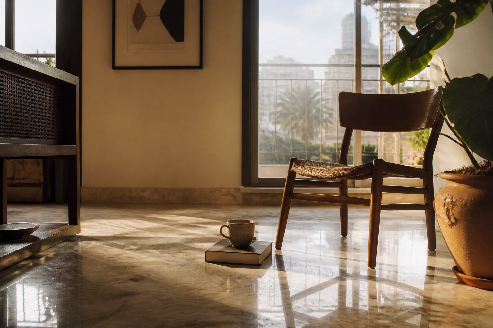

We don't start with a building.
We start with how people live — and work back to the structure that serves it.
Five movements, in order.
Development is a sequence of decisions. We keep ours in an order that puts living first.
Understand how people live.
Before a line is drawn, we study how residents will move, gather, rest and work inside a space — and how the neighbourhood around it behaves.
Design around actual behaviour.
Layouts follow life. Daylight paths, airflow, sightlines and shared spaces are resolved before saleable area is optimised.
Consider long-term usability.
We plan for how a building will be used years after handover — maintenance, running costs, adaptability — not just how it photographs on launch.
Execute with discipline.
Delivery is a promise. We build with the engineering, partners and discipline required to keep it — transparently.
Remain accountable to what is built.
We stay with what we build. The relationship doesn't end at possession — ease of living is meant to last.
The approach is how the five fundamentals get built.
Light, air, space, community and sustainability aren't added at the end. They're decided in the Understand and Design stages — and protected through Plan, Build and Stay.
See the five fundamentals →